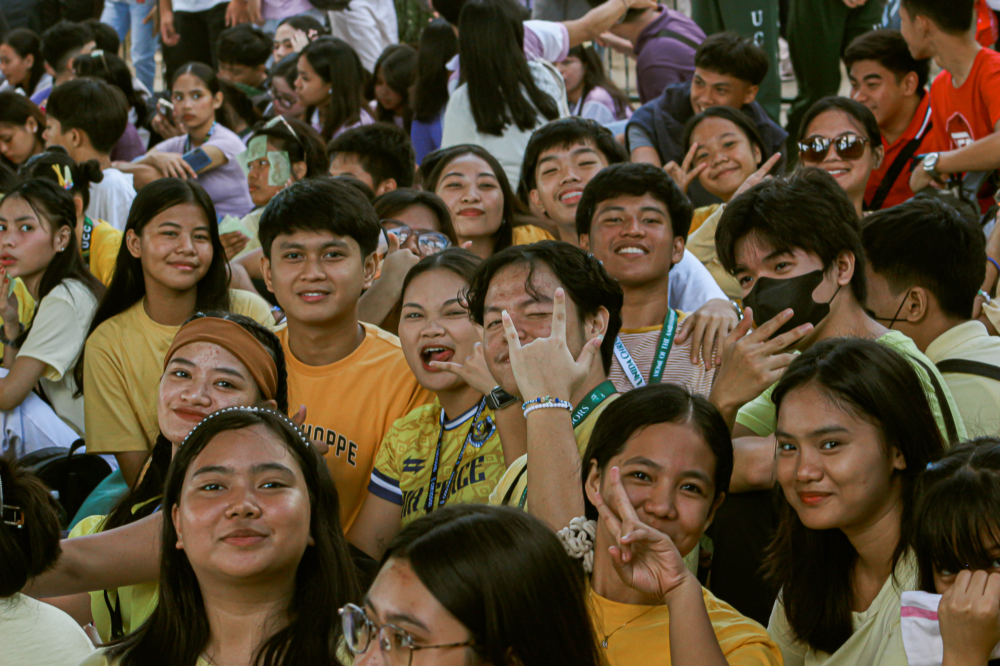
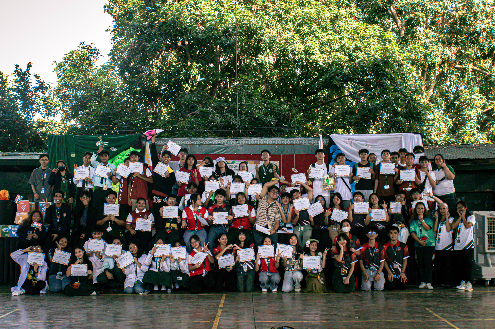

Wandering Minds
Posted on January 28, 2025

In this thought-provoking blog post, we explore the concept of wandering minds and how they shape our thoughts, creativity, and daily experiences. Discover the science behind mind-wandering, its potential benefits for problem-solving and innovation, and the moments when our minds drift away from the present. We’ll also share insights on how to embrace these wandering thoughts to enhance your creativity and find inspiration in unexpected places. Join us on this journey of self-discovery and learn how to make the most of your wandering mind!
Read MoreMr and Ms HUMSS
Posted on January 22, 2025

In a vibrant display of artistic expression, a captivating scene unfolds as two performers take center stage at a cultural event. The young man, kneeling with a microphone in hand, presents a blossoming flower to a graceful young woman who, adorned with colorful attire and floral accessories, is equally poised with her own microphone. Their interaction is not just a simple exchange; it symbolizes deep-rooted traditions and the rich tapestry of Filipino heritage. The backdrop, adorned with thematic murals, enhances the atmosphere, inviting the audience to immerse themselves in the celebration of art, music, and history. This moment captures the essence of community spirit and the importance of cultural celebrations, inspiring future generations to uphold and share their rich legacies.
Read MoreAmbassaDolls Party
Posted on December 7, 2024

The scene captures a lively outdoor concert, where a band is performing in front of an enthusiastic audience. The stage is adorned with a large digital screen displaying vibrant visuals, adding to the energetic atmosphere. In the foreground, a crowd of attendees is visible, with various hairstyles and outfits, suggesting a diverse range of individuals enjoying the event. Among them, a person in a white cowboy hat stands out, adding a unique touch to the scene. The backdrop features foliage and decorations, enhancing the overall ambiance, while the musicians, dressed casually, are actively engaged in their performance, creating a joyful and festive environment.
Read MoreEducational Trip 24'25'
Posted on February 8, 2025

Educational trips provide a unique opportunity for students to step outside the classroom and immerse themselves in real-world learning experiences. These excursions often involve visits to museums, historical sites, nature reserves, or scientific institutions, fostering curiosity and a deeper understanding of various subjects. In the vibrant scene depicted in the photo, we see a group of eager learners gathering along a tree-lined pathway, excitedly waiting for their adventure to begin. With bustling buses ready for transport and an atmosphere charged with anticipation, these trips not only encourage friendship and teamwork but also enhance academic knowledge through experiential learning. Join us as we delve into the significance of educational trips and explore how they enrich the learning journey for students of all ages.
Read MoreLet's Dance Concert
Posted on December 9, 2024

Join us for an unforgettable evening at the Let's Dance Concert, an electrifying showcase hosted by UNIDA Christian Colleges! This vibrant event features a stellar lineup of performances, highlighted by the incredible talents of guest artists Shan Vesagas and Manoeuvres. With a mix of energetic dance routines and captivating musical acts, the concert promises to be a celebration of creativity and community. Families and friends gathered to enjoy a night filled with laughter, rhythm, and dance, as young performers took the stage, showcasing their enthusiasm and skills. Don't miss the chance to experience this spectacular event that brings everyone together through the joy of music and movement!
Read MoreUnida Christian Colleges Intramurals 2024
Posted on November 25, 2024
Dive into the vibrant world of intramurals, where competition meets camaraderie! Each year, schools and colleges come alive with the energy and enthusiasm of intramural events, promoting not only athletic prowess but also teamwork and school spirit. These events give students the chance to showcase their talents across various sports and activities, while fostering lasting friendships and unforgettable memories. From electrifying games to spirited performances, intramurals are a celebration of unity, encouraging every participant to give their best while enjoying the thrill of friendly rivalry. Join us as we explore the excitement, the stories behind the events, and the joy of being part of a community that champions both competition and connection.
Read MoreResilient Tomorrow: Equipping Unida Christian Colleges for Effective Disaster Preparedness
Posted on January 28, 2025

In a world increasingly susceptible to natural disasters, the importance of preparedness cannot be overstated. Resilient Tomorrow aims to empower Unida Christian Colleges by integrating comprehensive disaster preparedness strategies into their educational framework. Through dynamic programs, engaging workshops, and community-oriented initiatives, the project ensures that students and faculty alike are equipped with the knowledge and skills necessary to respond effectively during emergencies. This initiative highlights the commitment of Unida Christian Colleges to fostering a culture of resilience, where proactive measures are celebrated, and safety practices become a fundamental part of campus life. Join us as we explore the innovative approaches being implemented, share inspiring success stories, and uncover how this endeavor shapes a safer tomorrow for everyone involved.
Read MoreWhere Minds Meet Creativity: Science Fair Competitions That Inspired Innovation
Posted on January 28, 2025

In a world where creativity meets scientific inquiry, science fair competitions serve as a launchpad for innovation and discovery. These events not only empower students to explore their passions but also foster collaboration and teamwork. They create an inspiring platform where young minds can present their research, showcasing how imaginative thinking can lead to real-world solutions. This blog delves into the captivating narratives of inventions and breakthroughs borne from these competitions, highlighting the transformative nature of science fairs in shaping future innovators. Join us as we explore the intersection of creativity and scientific exploration, uncovering stories that inspire and ignite a passion for learning.
Read MoreIgniting Innovation for a Sustainable Tomorrow: Reflections from the Earth 2.0 Science Fair
Posted on January 28, 2025
In the ever-evolving landscape of environmental awareness and scientific innovation, the Earth 2.0 Science Fair emerges as a beacon of hope for a sustainable future. This year’s event was a confluence of creativity, passion, and intellect, showcasing the pioneering projects of young scientists dedicated to addressing today's most pressing environmental challenges. From renewable energy solutions to innovative recycling methods, participants illustrated that the next generation is equipped to tackle issues like climate change and resource depletion with fresh perspectives. This blog captures the essence of these inspiring moments, reflecting on how such initiatives not only spark imagination but also ignite a collective commitment toward a sustainable tomorrow. Join us as we delve into the innovative spirits that attended the fair and explore the remarkable ideas that could shape our planet's future.
Read More